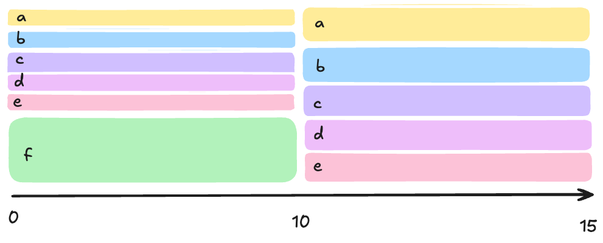
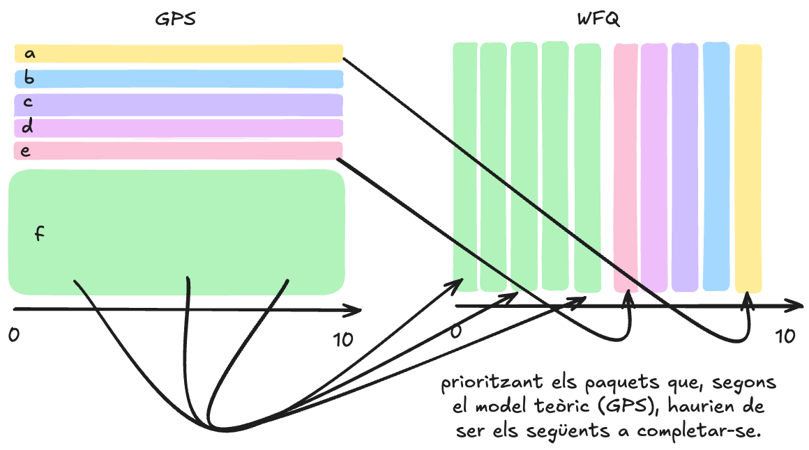
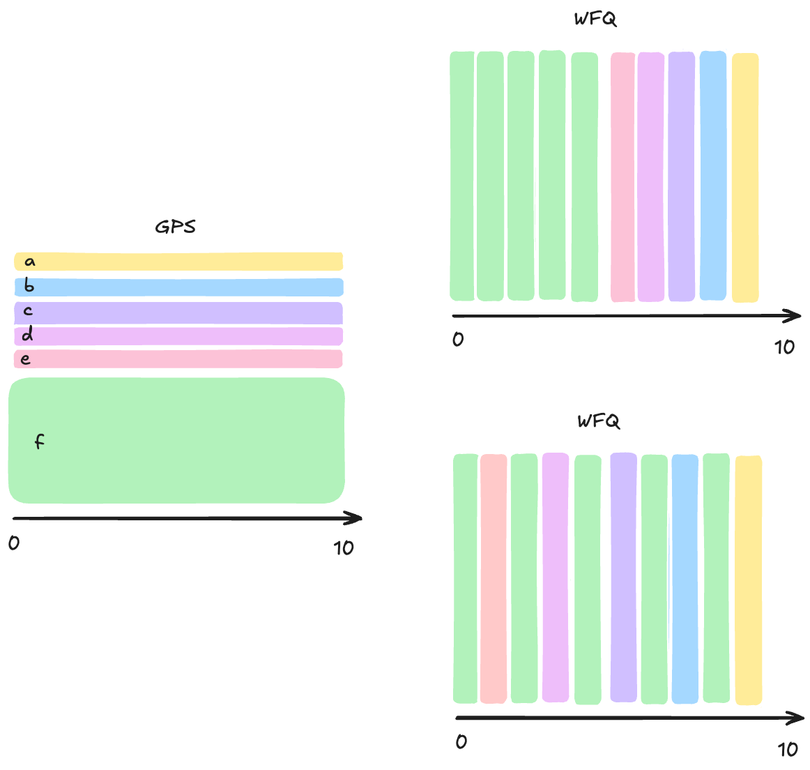

Justícia i repartiment proporcional
Cada procés \(i\) té un pes \(w_i\). Mentre està actiu, li pertoca una fracció de CPU
\[f_i(t) = \frac{w_i}{\sum_{j \in A(t)} w_j}\]
on \(A(t)\) és el conjunt de processos actius (preparats o en execució) a l’instant \(t\).
FCFS no provoca inanició i, en canvi, no és just en aquest sentit: un procés llarg pot rebre el 100 % de la CPU durant molt de temps. I SRTF, que és òptim en retorn mitjà, és clarament injust.
Capacitat \(C = 10\). Quant rep cada procés?
| Cas | Demandes | Repartiment just |
|---|---|---|
| 1 | P1 = 8, P2 = 6 | ? |
| 2 | P1 = 8, P2 = 4 | ? |
| 3 | P1 = 8, P2 = 4, P3 = 2 | ? |
| Cas | Repartiment | Per què |
|---|---|---|
| 1 | 5, 5 | Tots dos volen més que la meitat: meitat i meitat. |
| 2 | 6, 4 | P2 només en vol 4; el que sobra de la seva meitat va a P1. |
| 3 | 4, 4, 2 | P3 en vol 2 < 10/3; queden 8 per a dos: 4 i 4. |
Un repartiment és max-min just si no es pot augmentar la part de cap procés sense reduir la d’un altre que en tingui menys o igual.
Com es calcula (progressive filling):
En el pas 1, la capacitat es reparteix proporcionalment als pesos dels no satisfets.
| Ronda | Per unitat de pes | P1 (w=1) | P2 (w=2) | P3 (w=1) | Qui surt |
|---|---|---|---|---|---|
| 1 | 12/4 = 3 | 3 | 6 | 3 | P3 (vol 2) i P2 (vol 6) |
| 2 | 4/1 = 4 | 4 | 6 | 2 | P1 rep el que queda |
Resultat: 4, 6, 2.
| Curts | Llargs | CPU de cada curt | CPU de cada llarg |
|---|---|---|---|
| 1 | 1 | 90.9 % | 9.1 % |
| 0 | 2 | – | 50 % |
| 2 | 0 | 50 % | – |
| 10 | 1 | 9.9 % | 1.0 % |
| 1 | 10 | 50 % | 5 % |
En esperança, cadascun rep 50 quanta. Quina probabilitat hi ha que un d’ells en rebi 60 o més?
L’aleatorietat fa que la justícia sigui només probabilística. Podem obtenir el mateix repartiment de manera determinista?
Waldspurger, 1995: la versió determinista de la loteria.
A: 100 bitllets · B: 50 · C: 250 · \(L = 10000\) → strides 100, 200, 40. Empats per ordre alfabètic.
| Quantum | Pass A | Pass B | Pass C | S’executa |
|---|---|---|---|---|
| 1 | 0 | 0 | 0 | A |
| 2 | 100 | 0 | 0 | B |
| 3 | 100 | 200 | 0 | C |
| 4 | 100 | 200 | 40 | C |
| 5 | 100 | 200 | 80 | C |
| 6 | 100 | 200 | 120 | A |
| 7 | 200 | 200 | 120 | C |
| 8 | 200 | 200 | 160 | C |
| 9 | 200 | 200 | 200 | A |
Si D comença amb pass = 0, què passa?
vruntime de CFS, i el pass mínim és el seu min_vruntime.Generalized Processor Sharing (Parekh i Gallager, 1993): el recurs es reparteix com un fluid. Tots els actius reben servei alhora, cadascun a ritme \(f_i(t) \cdot C\).
| Flux | Pes | Ritme |
|---|---|---|
| f | 5 | 50 % |
| a–e | 1 cadascun | 10 % cadascun |

\[ \operatorname{lag}_i(t) = \underbrace{S_i^{\mathrm{GPS}}(t)}_{\text{servei ideal}} - \underbrace{s_i(t)}_{\text{servei real}} \]
Alguns textos de xarxes el defineixen amb el signe contrari. En aquest curs fem servir el conveni del kernel de Linux: lag positiu = se li deu servei.
El temps real no serveix per calcular quan acabaria un paquet a GPS: depèn de quants fluxos arribaran o marxaran. Fem servir un temps virtual \(V(t)\) que avança al ritme del servei que rep un flux de pes 1:
\[\frac{dV}{dt} = \frac{C}{\sum_{j \in A(t)} w_j}\]
Demers, Keshav i Shenker (1989). Per a cada paquet \(k\) del flux \(i\), que arriba a l’instant real \(a_i^k\):
\[S_i^k = \max\!\left(F_i^{k-1},\ V(a_i^k)\right) \qquad F_i^k = S_i^k + \frac{L_i^k}{w_i}\]

Tags de l’exemple (pes f = 5, a–e = 1):
| Paquet | f1 | f2 | f3 | f4 | f5 | a–e |
|---|---|---|---|---|---|---|
| \(S\) | 0 | 0.2 | 0.4 | 0.6 | 0.8 | 0 |
| \(F\) | 0.2 | 0.4 | 0.6 | 0.8 | 1.0 | 1.0 |
Bennett i Zhang (1996): un paquet és elegible si a GPS ja hauria començat:
\[S_i^k \leq V(t)\]
WF²Q envia, d’entre els paquets elegibles, el de \(F\) mínim.
| \(t\) | 0 | 1 | 2 | 3 | 4 | 5 | 6 | 7 | 8 | 9 |
|---|---|---|---|---|---|---|---|---|---|---|
| \(V(t)\) | 0 | 0.1 | 0.2 | 0.3 | 0.4 | 0.5 | 0.6 | 0.7 | 0.8 | 0.9 |
| WFQ | f | f | f | f | f | e | d | c | b | a |
| WF²Q | f | e | f | d | f | c | f | b | f | a |
